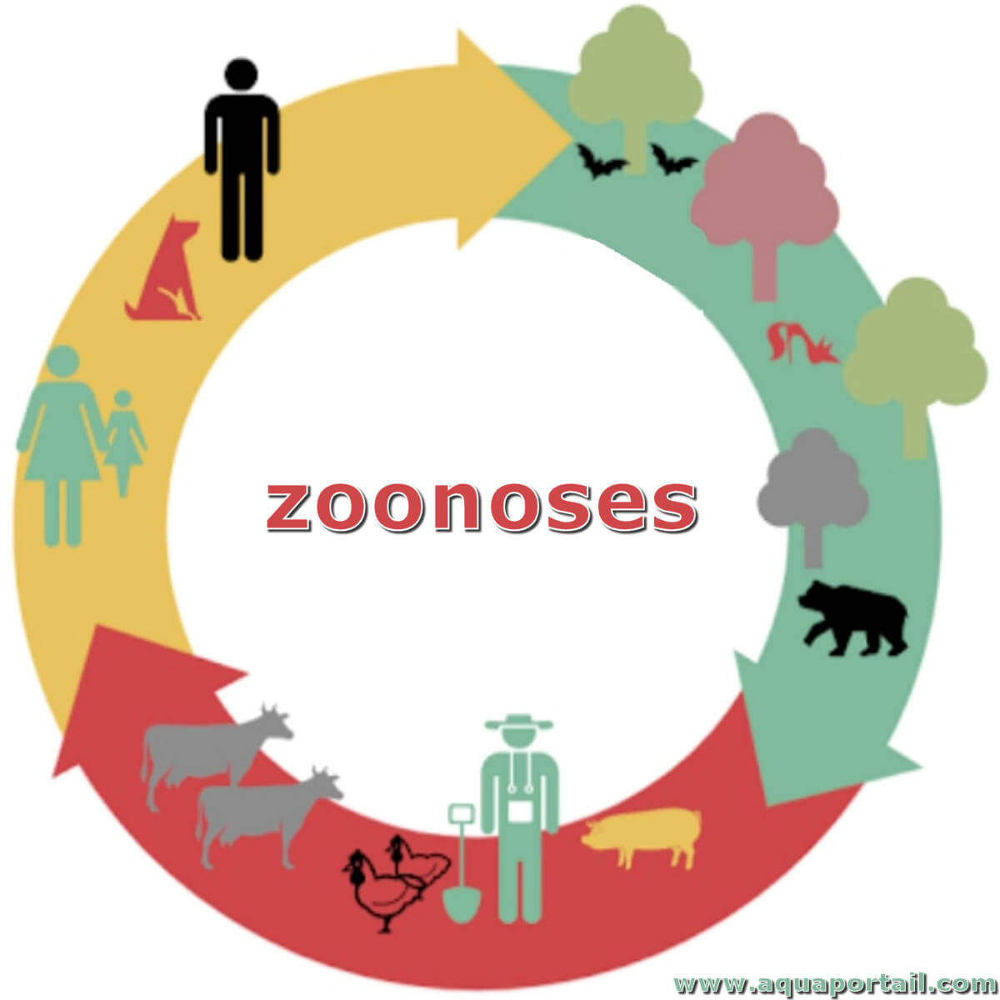
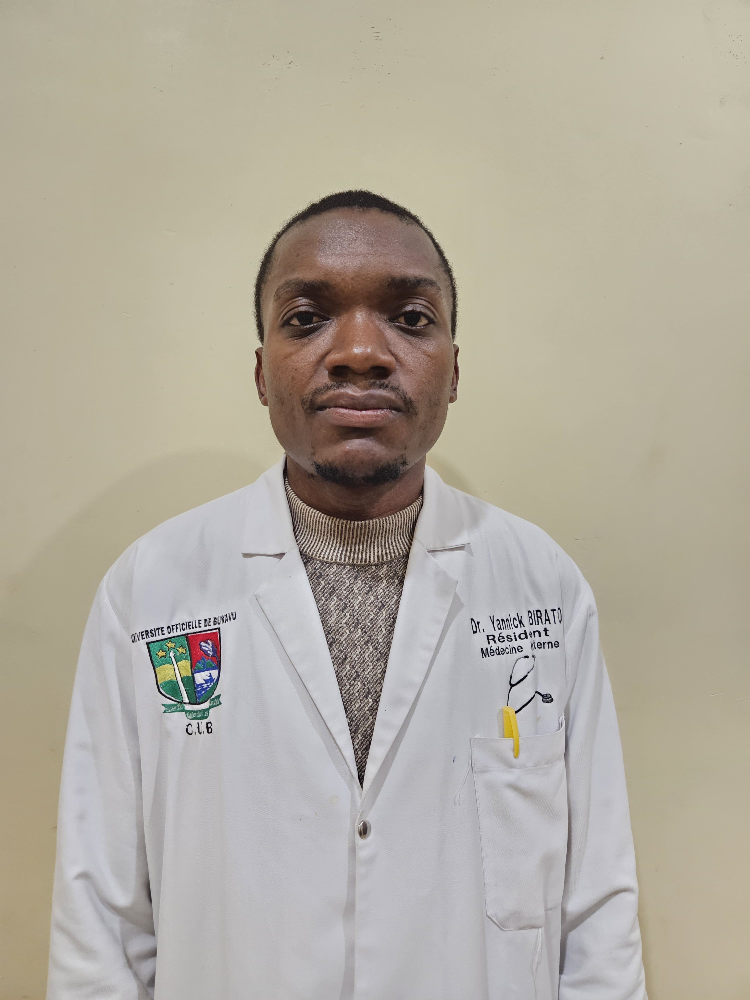

Université Officielle de Bukavu / Faculté de Médecine
Journées Scientifiques de Formation Continue sur les Zoonoses 2026
« Approche One Health : Collaborer pour mieux prévenir et contrôler les maladies émergentes »
Comprendre et Combattre les Zoonoses
Une session de formation continue multidisciplinaire axée sur les pathologies transmissibles de l'animal à l'homme (Rage, Ebola, Mpox, Brucellose...). Cette formation met en avant l'interaction cruciale entre santé humaine, animale et environnementale aux Cliniques Universitaires de Bukavu.
Pour plus d'informations sur les objectifs pédagogiques et le déroulement de l'activité, veuillez cliquer sur le bouton ci-dessous pour télécharger le programme officiel.
Espace Inscription
Sélectionnez la session correspondant à votre profil pour vous enregistrer :
Session Étudiants & Stagiaires
Date : Samedi 23 Mai 2026 à partir de 11h30
Cible : Étudiants en médecine, sciences vétérinaires, santé publique et stagiaires.
Session Professionnels & Chercheurs
Date : Samedi 30 Mai 2026 à partir de 13h00
Cible : Médecins, Vétérinaires, Biologistes, Épidémiologistes et Acteurs de la santé publique.
Nos Activités
Suivez l'état d'avancement des projets et ateliers du Club Univers Médical
 En cours
En cours Formation Continue sur les Zoonoses
Ateliers multidisciplinaires et partages scientifiques basés sur l'approche One Health aux Cliniques Universitaires de Bukavu.
 À venir
À venir Campagne Globale de Sensibilisation
Déploiement communautaire dans les écoles et universités de Bukavu pour la distribution de kits sanitaires et guides d'alerte précoce.
 Clôturée
Clôturée Symposium Urgences Médicales
Évaluation et mise en place de recommandations stratégiques sur l'état global du système de soins d'urgence.
Programme Détaillé
Consultez l'agenda de nos deux journées de formation organisées par le Club Univers Médical (CUM)
SESSION ÉTUDIANTS - SAMEDI 23 MAI 2026 (À partir de 11h30)
| Heure | Activités | Intervenants |
|---|---|---|
| 11h30 - 11h50 | ACCUEIL & Enregistrement | CUM |
| 11h50 - 12h00 | Mot d'ouverture et Introduction au concept One Health | Doyen de la FACMED / Prof KATCHUNGA |
| 12h00 - 12h40 | Épidémiologie des zoonoses majeures en RDC (Mpox, Ebola, Rage) | Prof. Dr. KATCHUNGA BIANGA |
| 12h40 - 13h20 | Surveillance et contrôle des réservoirs animaux des zoonoses | Expert Vétérinaire / Dr. YANICK BIRATO |
| 13h20 - 14h00 | Manifestations cliniques et diagnostic différentiel chez l'homme | CT Dr. SELEMANI JEAN |
| 14h00 - 15h00 | Pause (Casse-croûte) | |
| 15h00 - 15h40 | Urgences zoonotiques en pédiatrie : Focus sur la Rage et le Mpox | Prof. Dr. BIRINDWA MUHANDULE |
| 15h40 - 16h20 | Espace pour nos Partenaires (Santé publique & Recherche) | |
| 16h20 - 17h00 | PANEL DE DISCUSSION & Q&R | |
SESSION PROFESSIONNELS - SAMEDI 30 MAI 2026 (À partir de 13h00)
| Heure | Désignation | Intervenants |
|---|---|---|
| 12h30 - 12h50 | ACCUEIL & Remise des kits de formation | CUM |
| 12h50 - 13h00 | Allocution d'ouverture officielle | Autorités Universitaires & Décanat |
| 13h00 - 13h40 | Zoonoses émergentes et sécurité sanitaire mondiale : Enjeux en RDC | Prof. Dr. KATCHUNGA BIANGA |
| 13h40 - 14h00 | Pause-café & Réseau | |
| 14h00 - 14h40 | Biologie moléculaire et défis diagnostiques des zoonoses virales | Dr. YANICK BIRATO |
| 14h40 - 15h20 | Impact des zoonoses sur la santé de la reproduction et transmission verticale | CT Dr. SELEMANI JEAN |
| 15h20 - 16h00 | Pause | |
| 16h00 - 16h40 | Protocoles de prise en charge et aspects préventifs en milieu rural et urbain | Prof. BIRINDWA MUHANDULE |
| 16h40 - 17h00 | Présentation des projets de recherche One Health | |
| 17h00 - 17h20 | PANEL & FORMULATION DES RECOMMANDATIONS | |
Nos Formateurs
Découvrez notre équipe pluridisciplinaire d'experts des Cliniques Universitaires de Bukavu :

Prof. Dr. KATCHUNGA BIANGA Philippe
« Épidémiologie et Enjeux Globaux des Zoonoses Émergentes »INTERNISTE - ÉPIDÉMIOLOGUE

Prof. Dr. BIRINDWA MUHANDULE Archipe
« Prise en charge des Zoonoses et manifestations pédiatriques »PÉDIATRE

CT. Dr. SELEMANI JEAN
« Diagnostic clinique et impact sur la santé communautaire »GYNÉCO-OBSTÉTRICIEN / CHERCHEUR

Dr. YANICK BIRATO
« Diagnostic biologique, moléculaire et surveillance des réservoirs »RÉSIDENT / BIOLOGISTE CLINICIEN
Galerie
Club Univers Médical - Activités de sensibilisation et de recherche One Health